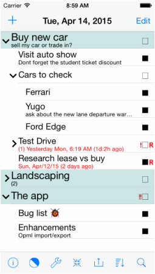
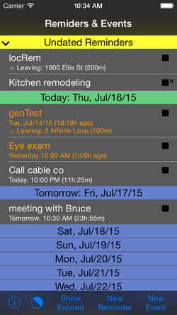
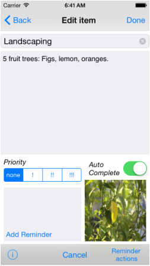

Welcome to the ActionTree app!
A hierarchical project manager that breaks projects down into steps simple enough to accomplish easily, with a built-in Timeline view of your reminders and events.
View on the App StoreThis page provides more complete information about the ActionTree iOS app. Please follow my Twitter account @MarkGoral to get update alerts/info.
It would be of great help to have your comments and suggestions — please use the support page to send me a message. If you like the app, please post a review in the App Store. Thanks!
Status
In App Store: 3.6 (64)
Bug fixes. Uploaded Ver 3.6.1 (65) — available in a day or 2. Fixes a bug that may prevent app launch.
I appreciate any feedback! Please use the support page to send email for support or comments.
Overview
The app was written using Swift, Apple's programming language. It fills a void I felt in the productivity apps offered in the App Store.
The app supports iOS 8 and up, and all iPhones in portrait orientation. In the future I may add support for the iPad and Apple Watch, plus iPhone landscape orientation, and possibly iOS shortcuts (iOS 12) — please send a note about a particular shortcut you'd be interested in.
I was looking for something simple to manage projects by breaking them into steps until each step is simple enough to accomplish easily. This is the ActionTree Projects view, which enables hierarchical projects.
ActionTree also provides a Timeline view showing reminders and events on your device sorted by time. Reminders created in the Projects view are shown with a link in the Timeline view.
The Projects view

The Projects view is a table. Each row represents a "project item," where the first line shows the item's title. A second line in smaller font (the "subtext"), if present, shows additional item info.
An item may have other items underneath it at a different "level." Those items are offset slightly to the right — one offset step per level. In that case the item is a "Parent" item, and the items underneath are "children" and "siblings." A child or sibling item may itself be a Parent.
A Parent item may be in a collapsed or expanded state, represented by the arrow just left of the item's text. The state is changed with a tap on the item's title.
An item at the very top of an item hierarchy is referred to as a "top item," usually used for project titles.
What an item's subtext shows:
- If the item has a note, the subtext line displays the first line of the note — whatever fits.
- If the note is empty and the item has a reminder, the subtext displays the reminder's info.
- If the item is a Parent and is collapsed, the subtext starts with (number of children)/(number of siblings).
- The subtext color matches the title's color and reflects item status: pending/completed → black/gray (or white/gray in dark theme). When the subtext shows reminder info and the reminder is past due, the color turns red (orange in dark theme).
Projects view gestures
- Switch to Timeline view — tap the Projects view title (by default, the current date).
- Expand/collapse a parent item — tap on the item's title.
- View or edit item details — quick swipe right on the item's title, taking you to the "Edit Item" view.
- Toggle project item complete status — double tap on the item's check mark.
- Add new item — tap the "+" top right to enter add-item edit mode, then tap one of the small green "+" icons. This takes you to the Edit Item view; set at least the title, then hit Done. Note: if the table is empty, hitting "+" takes you directly to Edit Item view.
- Delete an item — tap "Edit" top left to enter delete mode, tap a red "−" button, then tap Delete.
- Promote/demote an item — enter add or delete mode, then swipe left/right on the item's text.
- Move an item up or down — enter add or delete mode, then drag the item using the reorder symbol on the right.
- Select an item — tap and hold for a moment.
Note: The double-tap for the check box and swipe-right for Edit Item were chosen over a single tap to reduce accidental gestures.
About the completion check box:
- By default, a Parent item is marked complete automatically when all its siblings complete. Its check mark is colored gray. This can be changed via the Auto Complete switch (see Edit Item below).
- A non-Parent item can be checked complete by the user. Its check mark is colored green.
- The check box appears black if the item has no children, or all children are completed.
- Marking an item complete also marks its reminder (if any) complete, and vice versa.
Item with reminder:
- An item with a reminder is marked with an "R" to the right of the check box.
- The color of the "R" reflects reminder status: future/completed/past due → black/gray/red. The completion status of the reminder generally matches the item, even if changed from another app.
To move between the Timeline & Projects view — tap the view title, in either view.
OPML export & import
ActionTree supports import and export of Projects items to/from OPML files. The related menu is under the extern button (Projects view bottom row, 3rd button from the right).
Please note:
- ActionTree imports the following XML attributes: text, note, priority, completed, and url. URL links are imported into the item's note.
- ActionTree exports the following XML attributes: text, note, priority, completed.
- The exported file is given the extension "xml." When prompted, specify the file name without the extension.
- The import file list shows only files with the "xml" extension.
- Imported file items are appended to the current content — there is no "overwrite" option at this time. Imported items are shown in their collapsed state.
- To transfer a file to/from a PC, use iTunes file sharing: connect the device, launch iTunes, select your device, select "Apps" in the left column, then select ActionTree in the list of apps supporting file sharing. The right pane shows files available for export. Open the Finder — drag & drop a file into the Finder's target directory to export, or reverse the drag & drop to import.
The Timeline view

The Timeline view — dark theme
The Timeline view consists of 2 tables. Each row represents a reminder or event and shows its title, with a subtext line providing additional info.
- Pending reminders & events — the undated reminders section is sorted by creation date; other sections are sorted by due/start dates.
- Expired reminders/events are sorted by completion/start dates.
ActionTree shows reminders and events in a time frame of ±2 years around the current date, plus all undated reminders.
Two different views are provided:
- The pending "Reminders & Events" view shows pending reminders and events, including undated reminders in the collapsible top section. The Today section also includes overdue reminders, marked in red text.
- The expired "Reminders & Events" view shows completed reminders and past events.
To switch between sections, tap the "Show Expired"/"Show Pending" button at the bottom.
Symbols used:
- The "∋" symbol in a reminder's subtext means the reminder is associated with a Project item. To view it, go to the edit/view view and tap "Show in projects." A reminder is associated with a Project item when created from within the Edit Item view.
- A location-based reminder is marked with a "⎈" symbol.
- A small "N" on the item's right marks a note — tap the item to show or hide it.
Timeline view gestures
- Switch to Projects view — tap the Timeline view title ("Reminders & Events").
- Edit an item — right swipe on the item.
- Tap an item to show/hide its note (items with a note).
The Edit Item view

The Edit Item view (Parent item)
You enter this view with a right swipe on a Project item. Here you can edit the item's title, add/edit a note, add/edit a quick reminder, or add a photo. The note field detects links, addresses, and phone numbers — they appear in blue when not editing and can be tapped for the expected context.
The image shows the Edit Item view for a Parent item. For non-parent items, the Auto Complete switch doesn't apply and is hidden.
To add a reminder: tap "Add reminder," scroll the date picker to select a date, then tap Done or the reminder info box.
To add a photo: tap "Add photo." The first time, ActionTree will ask permission to access your photo album. Select a photo — tap the image to view it full size at the correct aspect ratio; you can also pinch to zoom or remove the photo.
To dismiss the keyboard: swipe right in the note area. (A swipe-down gesture was removed in rev 1.1 (11) to fix interference with scrolling.)
The Reminder actions button:
- Remove reminder: removes the reminder's association with the item; the reminder itself is not deleted and can still be viewed in Timeline.
- Show in Timeline: highlights and shows the reminder in the Timeline view. Swipe right takes you to the reminder editor.
- Attach Existing Reminder: ActionTree searches existing reminders for one matching the item's name (case insensitive) and associates it if found.
The Auto Complete switch:
- On (default) — the item is marked complete automatically once all children complete. The check mark is colored gray to distinguish it from a manual completion.
- Off — once all children complete, the check box turns black but the item stays unchecked; the user can then check it manually. Manually checked items show a green check mark.
- This switch applies only to Parent items and is hidden for non-parents.